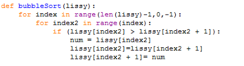
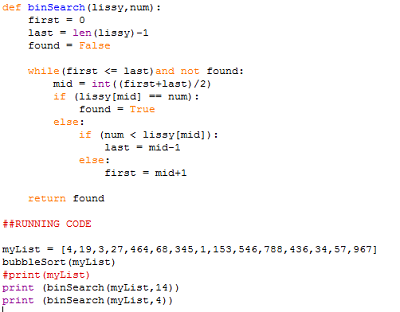
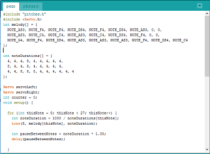
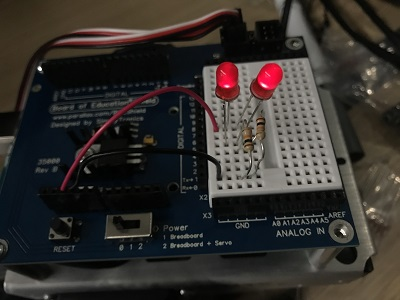
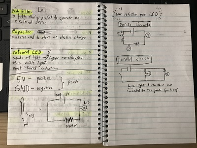

Dyllen Nellis
Code Portfolio


2017 GWC Summer Program
This is what I've made during the 2017 Girls Who Code Summer Immersion Program!
Algorithms
Bubble Sort: This sorts a list from least to greatest. TO do this, it goes through the list switching values that are too big or too small. This could take multiple times of going through the list to complete.
Binary Search: This is to find a specific value in an already sorted list. It looks at the list, then finds the middle value (if it is an even split, round down). Then it will see if the value wanted is less than oir greater than the one currently being looked at. For example: if the value is greater than, it'll ignore all the values less than, then repeat the process of splitting in half.
Robotics
This is a piece of my code that programs the robot to sing the song "Fireflies" by Owl City.
 In the first day of working with robotics, we created a circuit and learned the difference between series circuits and parallel circuits.
Photo Manipulation


Python

My team of girls created a game that offers the user a series of choices of animals to visit when going to the zoo.